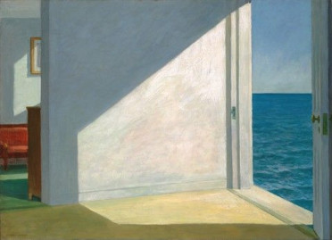

18 January 2026
a self, returning

dear you,
i carry all i’ve been,
like a shawl unfolded slowly from the back of a forgotten chair,
its edges worn thin by seasons i survived without naming
still holding the warmth of old weather
of storms that passed through me
and left without asking.
there is no trumph waiting,
only the patient, unnoticed movement
of a self finding its way back into my hands.
a steady return
of a self i was certain
had slipped beyond reach.
i have begun to appreciate
the way my breath settles
when i stop explaining myself.
and how the silence gathers,
not empty
but weighted like snow
on a roof that remembers winter
and does not collapse beneath it.
and i am learning my shape again,
tracing my outline in low light,
learning again that worth
is not something to earn.
instead, it comes back slowly,
mist rising from ground
that was never barren,
simply waiting.
there are no answers here
just a quiet to keep,
the way one shelters a flame from wind,
the way a house keeps warmth
hours after the door has closed
and footsteps have long faded from the hall.
and in that keeping,
something stays.
yours, kate
(artwork: rooms by the sea by edward hopper)